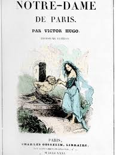
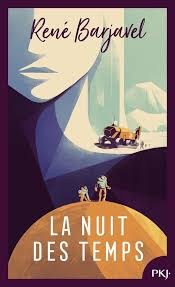
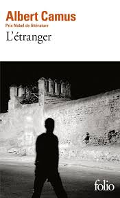
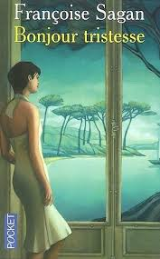
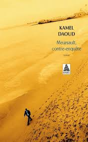
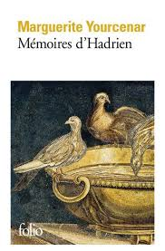

Explorez les chefs-d’œuvre de la littérature française à travers des histoires d'amour, de révolte, de mystère et de poésie intemporelle.

Une histoire d'amour tragique entre la gitane Esmeralda et le bossu Quasimodo, à l'ombre de la cathédrale Notre-Dame.

La plus belle fille du monde épouse le plus beau prince de tous les temps, et il s'avère être... eh bien... bien moins que l'homme de ses rêves.

Un roman sur Meursault, un homme indifférent qui commet un meurtre, explorant l'absurdité et l'existentialisme.

Une adolescente vit avec son père veuf et les choses se compliquent lorsqu'une nouvelle femme entre dans leur vie.

Un roman qui raconte les événements de « L'Étranger » du point de vue du frère arabe de la victime, mettant en évidence le colonialisme et l'identité.

Un roman qui imagine les mémoires de l'empereur romain Hadrien, réfléchissant sur sa vie et son règne.